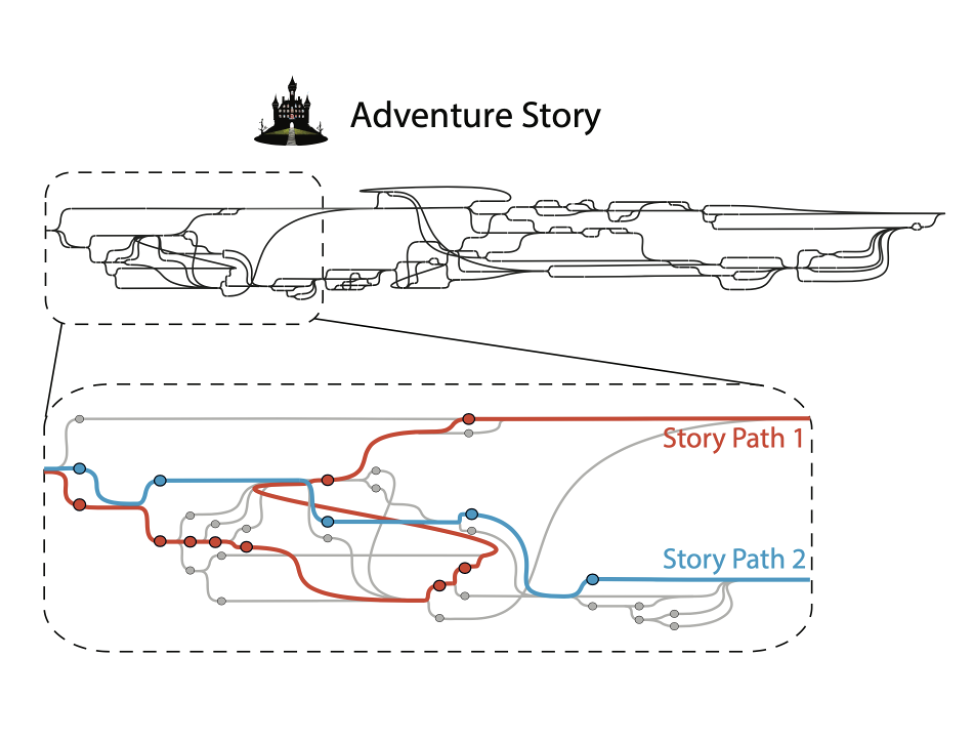
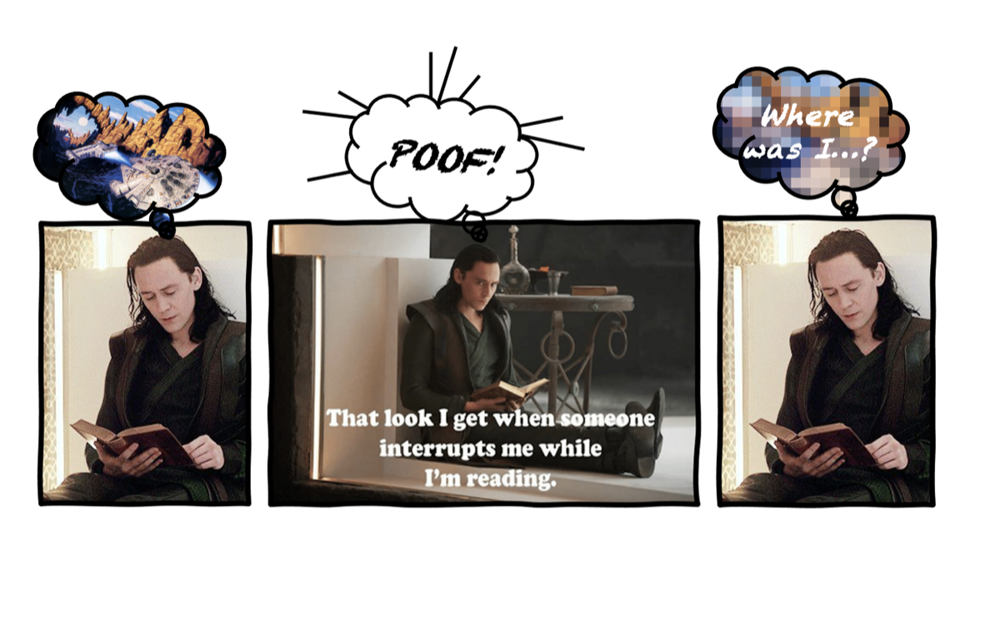
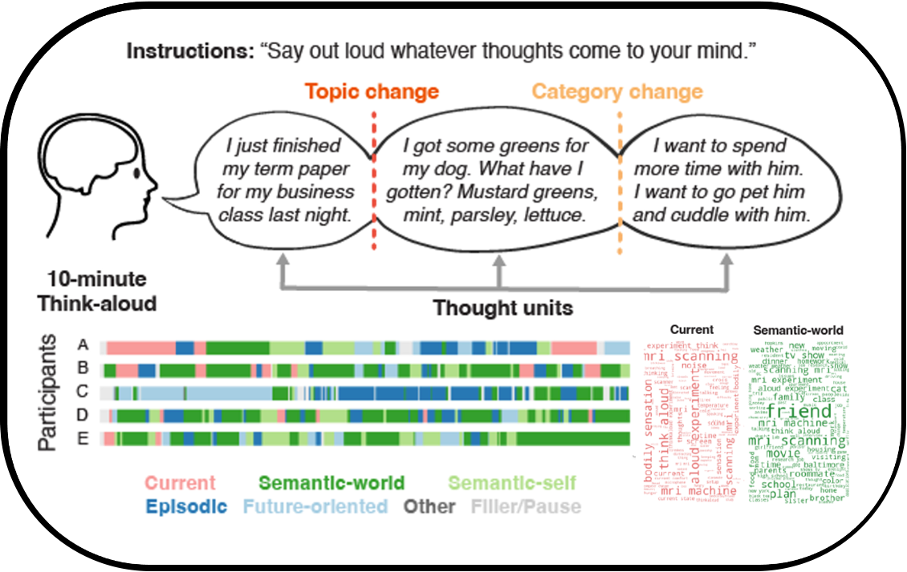
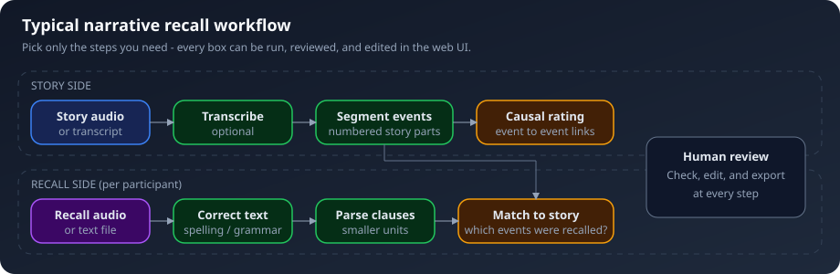
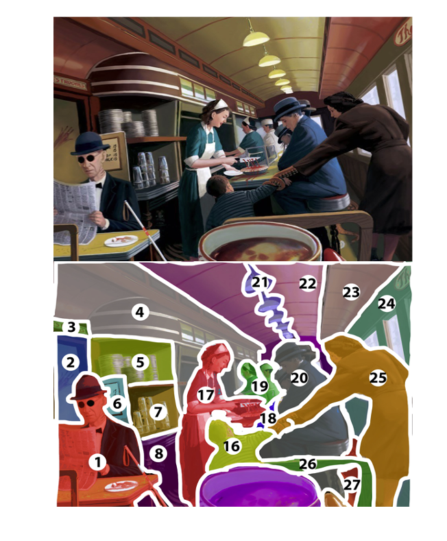

Xian Li
Home
Research
Teaching
Demo
Research
How do meaning and feeling emerge from the experiences we live through?
Lived experience is not a sequence of isolated trials. It unfolds continuously, accumulates over a lifetime, and is shaped by our choices and punctuated by interruptions. I study the emergent properties of naturalistic cognition: the memories, interpretations, and feelings that arise when a mind with a history meets events as they unfold. Memory research increasingly uses stories and films, yet many paradigms still overlook three defining features of lived experience: we actively shape its course, we continually navigate internal and external interruptions, and our feelings reflect both the present moment and our past. My research brings these features together to understand how cognitive and neural processes support everyday life.
The three branches below build on one another. Choosing what happens next personalizes memory, suggesting that memory functions as more than a record: it is a scaffold built around the person. As events unfold, that scaffold must survive the interruptions of everyday life, raising the question of how the brain preserves it against interference. That same scaffold may also shape how new events feel—a question at the heart of my postdoctoral work. I combine naturalistic experiments in which people read, listen to, or choose their way through stories with functional magnetic resonance imaging (fMRI) and large language models (LLMs) to study how experience takes shape over time. Understanding memory as a constructed, personal scaffold also has implications for AI: it helps clarify what systems that read, remember, and personalize should emulate about human cognition, and what they may not capture on their own.
1. Agency: how acting on events shapes what we remember
In real life we are not passive recipients of events; we choose, and our choices change what happens next. This branch asks how that sense of agency changes memory for the events themselves.
Choose your own adventure: when readers steer the story, their memories become their own

2. Continuity: how the mind keeps a thread through interruptions and wandering thoughts
A memory scaffold is built while experience unfolds, yet experience is interrupted all the time, by pauses, by other people, by our own thoughts, and we pick the story back up. This branch asks how the brain keeps prior mental context available across interruptions, and what happens when thought runs freely.
Where was I? How the brain keeps a story alive across interruptions

Thinking out loud: how memories and plans surface in the free flow of thought

3. Feeling: how memory builds social and emotional experience
If memory is a scaffold rather than a record, it should shape how new events feel. Constructionist and predictive theories of emotion make exactly that claim, yet direct tests are almost absent, because in ordinary stimuli the emotion of a scene cannot be separated from the scene. This is the focus of my postdoctoral work at UCLA with Dr. Maureen Ritchey and Dr. Ajay Satpute, which began in October 2026.
To be continued…
The instrument: humans and LLMs as subjects of the same science
The three branches share a method that did not exist five years ago. LLMs can annotate narrative experience at scale, and they can be studied as a second kind of comprehender. Where models and people agree, naturalistic memory research gains tools that scale by an order of magnitude; where they diverge, the divergence maps what human comprehension adds.
The causal backbone of a story: what holds events together, as judged by people and by language models
narRaters: open-source narrative recall processing, with a web interface at every step

python3 -m pip install narraters, then narraters serve.
Related and earlier work
The methods above were built in projects on perception and brain networks that preceded or ran alongside the three branches.
Each viewer's own path: how self-guided exploration of a scene shapes the brain's response to it

Foundations: faces, attention, and brain networks
Software and data releases
- Agency and episodic memory: data, code, and stimuli for Li et al. (2026), Nature Communications. Subject-level data for both stories and all conditions, analysis scripts and figure notebooks, story maps and the task demo. GitHub; archived release doi:10.5281/zenodo.19124153.
- Interruption fMRI dataset and analysis code for Li, Lee & Honey (2026). GitHub; archived release doi:10.5281/zenodo.22260085.
- Verbalized spontaneous thought fMRI dataset (Zhang et al., 2026, Scientific Data; co-author). OpenNeuro ds006067.
- narRaters (see "The instrument" above). Project page, GitHub and PyPI; archived release doi:10.5281/zenodo.20486079.
- Causal Rater for Story, a custom GPT for rating causal relations between narrative events. Open in ChatGPT.
Preprints and manuscripts in preparation
Cortical and hippocampal pathways to mental continuity
Li, X., Lee, H., & Honey, C. J. (2026). bioRxiv. Under review.
preprint,
data and code
Human and LLM alignment in causal reasoning for narrative events and their structural association with human memory
Li, X., Li, X., Antony, J. W., & Chen, J. (in preparation).
Peer-reviewed publications
An fMRI dataset of verbalized spontaneous thought with annotated transcripts and self-report trait measures
Zhang, M., Liu, P. R., Su, H., Zhao, M., Li, X., Born, S., Lee, Y., Honey, C. J., Chen, J., & Lee, H. (2026).
Scientific Data.
paper,
preprint
Interactive narratives reveal the personalizing effect of agency on episodic memory
Li, X., Ni, N. K., Born, S. J., Gualano, R. J., Lee, I., Bellana, B., & Chen, J. (2026).
Nature Communications, 17, 7272.
paper,
preprint
Left hemisphere abnormalities in face-selective activation and functional connectivity in developmental prosopagnosia
Campbell, A., Li, X., Rothlein, D., Esterman, M., & DeGutis, J. (2025).
Imaging Neuroscience, 3.
Neural dynamics of spontaneous memory recall and future thinking in the continuous flow of thoughts
Su, H., Li, X., Born, S., Honey, C. J., Chen, J., & Lee, H. (2025).
Nature Communications, 16, 6433.
paper
Effects of congruent emotional contexts during encoding on recognition: An ERPs study
Xie, M., Han, M., Liu, Z., Li, X., & Guo, C. (2024).
Psychophysiology, 61, e14516.
Investigating the influence of autism spectrum traits on face processing mechanisms in developmental prosopagnosia
Fry, R., Li, X., Evans, T. C., Esterman, M., Tanaka, J., & DeGutis, J. (2023).
Journal of Autism and Developmental Disorders, 53, 4787–4808.
From encoding to retrieval: Change in level of unitization resolves debate about unitization's effect on associative recognition
Liu, Z., Li, X., Li, X., Yuan, J., & Guo, C. (2023).
Psychophysiology, 60, e14161.
Functional alteration due to structural damage is network dependent: Insight from multiple sclerosis
Bartnik, A., Fuchs, T. A., Ashton, K., Kuceyeski, A., Li, X., Mallory, M., et al. (2023).
Cerebral Cortex, 33, 6090–6102.
Not so fast! Response times in the computerized Benton Face Recognition Test may not reflect face recognition ability
DeGutis, J., Li, X., Yosef, B., & Mishra, M. V. (2022).
Cognitive Neuropsychology, 39, 155–169.
Neural mechanisms of reward-by-cueing interactions: ERP evidence
Li, X.*, Zhang, M.*, Wu, L., Zhang, Q., & Wei, P. (2021). *equal contribution
Frontiers in Human Neuroscience, 15.
Preserved network functional connectivity underlies cognitive reserve in multiple sclerosis
Fuchs, T. A., Benedict, R. H. B., Bartnik, A., Choudhery, S., Li, X., et al. (2019).
Human Brain Mapping, 40, 5231–5241.
Electrophysiological evidence of encoding in self-referential effect
Yang, X., Mao, X., Han, M., Li, X., & Guo, C. (2019).
NeuroReport, 30, 901–907.
White matter tract network disruption explains reduced conscientiousness in multiple sclerosis
Fuchs, T. A., Dwyer, M. G., Kuceyeski, A., Choudhery, S., Carolus, K., Li, X., et al. (2018).
Human Brain Mapping, 39, 3682–3690.
Semantic relationship shared between words: Influence on associative recognition supported by event-related potentials
Lyu, Y., Wang, Y., Mao, X., Li, X., & Guo, C. (2018).
NeuroReport, 29, 71–78.
Human memory area data blitz (organized by Dr. David Clewett), Department of Psychology, University of California, Los Angeles (October 2026).
Tompary Lab (Dr. Alexa Tompary), Drexel University (September 2026).
Naturalistic Cognition Lab (Dr. Coraline Iordan), University of Rochester (August 2026).
Colloquium, Cognitive Neuroscience program, Ohio State University (April 2026).
Voss Lab and Jacobs Lab (Dr. Joel Voss, Dr. Josh Jacobs), University of Chicago (March 2026).
MemoLab (Dr. Maureen Ritchey), University of California, Los Angeles (March 2026).
Stanford Memory Lab (Dr. Anthony Wagner), Stanford University (February 2026).
Dynamic Perception and Memory Lab (Dr. Chris Baldassano), Columbia University (September 2025).
Princeton Neuroscience Institute seminar (Dr. Kenneth Norman), Princeton University (March 2025).
Decision Neuroscience Lab (Dr. Tobias Donner), University Medical Center Hamburg-Eppendorf (February 2025).
Episodic Memory Group (Dr. Chris Bird), University of Sussex (July 2022).
Invited talk, Vision Sciences Society Annual Meeting (June 2020).
Cortical and hippocampal pathways to mental continuity
Li, X., Lee, H., & Honey, C. J. (2026). Abstract, Society for Neuroscience (SfN) Annual Meeting.
Human and LLM alignment in causal reasoning for narrative events
Li, X., Li, X., & Chen, J. (2026). Conference on Cognitive Computational Neuroscience (CCN), New York.
Cognitive and neural origins of persistent experiences
Kressin Palacios, G., Li, X., Lai, Y., & Honey, C. J. (2026). CCN, New York. (mentored project)
Automated recall-to-story matching for memory research
Arekar, D., Kressin Palacios, G., Li, X., & Chen, J. (2026). CCN, New York. (mentored project)
Two pathways to mental continuity
Li, X., & Honey, C. J. (2026). Poster, Context and Episodic Memory Symposium (CEMS), Philadelphia.
Agency personalizes episodic memories
Li, X., Ni, N. K., Born, S. J., Gualano, R. J., Lee, I., Bellana, B., & Chen, J. (2025). Poster, SfN, Chicago.
Narrative representations resist interference
Li, X., & Honey, C. J. (2025). Poster, SfN, Chicago.
Neural origins of persistent mental content
Kressin Palacios, G., Li, X., Lai, Y., & Honey, C. J. (2025). Poster, SfN, Chicago. (mentored project)
Neural representations that resist interference
Li, X., & Honey, C. J. (2025). Poster, CCN, Boston.
CCN abstract
Agency enhances individuality in memory for narratives
Li, X., Ni, N. K., Born, S. J., Gualano, R. J., Lee, I., Bellana, B., & Chen, J. (2024). Talk, CEMS, Philadelphia.
Agency personalizes naturalistic event memories
Li, X., Ni, N. K., Born, S., Gualano, R. J., Lee, I., Bellana, B., & Chen, J. (2024). Poster, SfN, Chicago.
The role of agency in memory for narratives
Li, X., Ni, N. K., Born, S., Gualano, R., & Chen, J. (2022). Poster, CCN, San Francisco.
The role of agency in memory for narratives: A choose-your-own-adventure paradigm
Li, X., Ni, N. K., Born, S., Gualano, R., & Chen, J. (2022). Talk and poster, CEMS, Philadelphia.
Exploration path trajectory during self-guided viewing of complex photographs and paintings predicts brain activity patterns in the default network
Li, X., Su, H., Born, S., Chen, J., & Honey, C. J. (2021). Talk and poster, SfN, Chicago.
The role of agency in memory for narratives: A choose-your-own-adventure paradigm
Li, X., Ni, N. K., Born, S., Gualano, R., & Chen, J. (2021). Poster, CEMS, Philadelphia.
Deficient functional MRI selectivity and connectivity in developmental prosopagnosia is specific to face regions
Li, X., Arizpe, J., Rothlein, D., Esterman, M., & DeGutis, J. (2020). Journal of Vision, 20(11), 827 (Vision Sciences Society).
Faces are no object: Normal novel object performance in developmental prosopagnosia
Fry, R., Li, X., Wilmer, J., & DeGutis, J. (2020). Journal of Vision, 20(11), 1231 (Vision Sciences Society).
abstract
Alteration of resting-state functional connectivity in response to structural disruption differs between well-established functional networks in multiple sclerosis
Bartnik, A., Fuchs, T. A., Ashton, K., Li, X., Mallory, M., Oship, D., et al. (2020). Poster, American Academy of Neurology (AAN) Annual Meeting, Toronto.
Preservation of functional connectivity moderates the impact of white matter tract disruption on cognition in multiple sclerosis
Fuchs, T. A., Benedict, R. H. B., Choudhery, S., Li, X., Carolus, K., Mallory, M., et al. (2018). Poster, AAN Annual Meeting, Los Angeles.